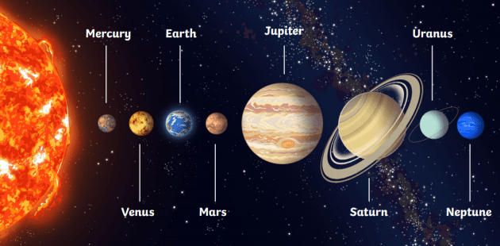

Introduction
The Solar System is the gravitationally bound system of the Sun and the objects that orbit it, either directly or indirectly.
Planets
There are eight planets in the Solar System: Mercury, Venus, Earth, Mars, Jupiter, Saturn, Uranus, and Neptune.
Dwarf Planets
There are also five recognized dwarf planets: Pluto, Eris, Haumea, Makemake, and Ceres.
Planetary Data
| Planet | Diameter (km) | |
|---|---|---|
| Equatorial | Polar | |
| Earth | 12,742 | 12,714 |
| Jupiter | 142,984 | 133,709 |